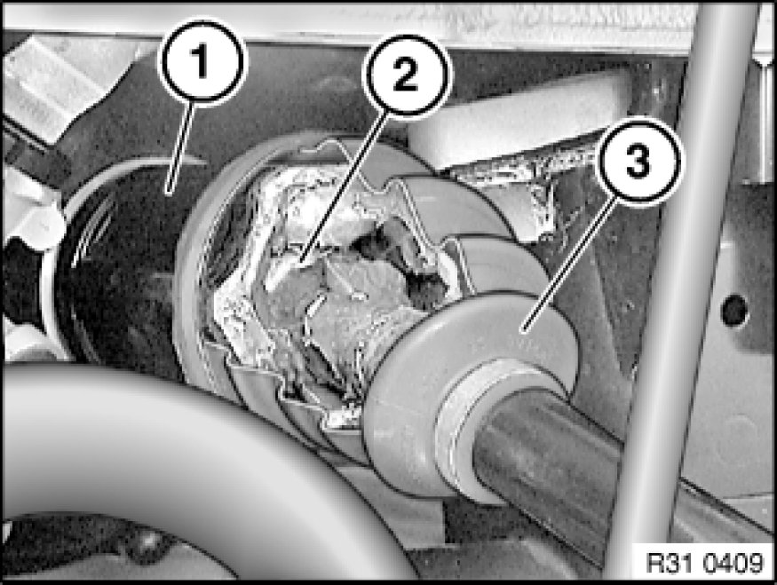
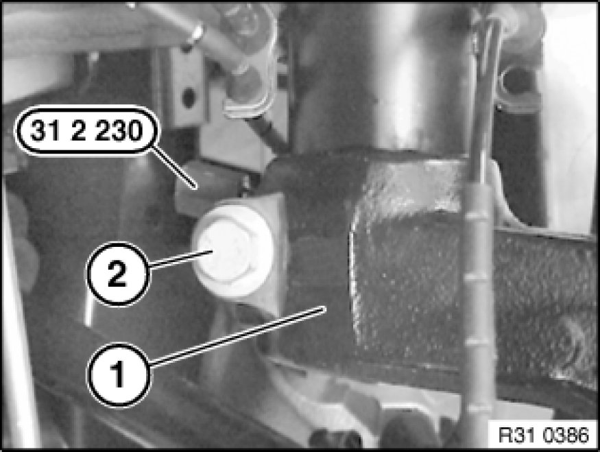
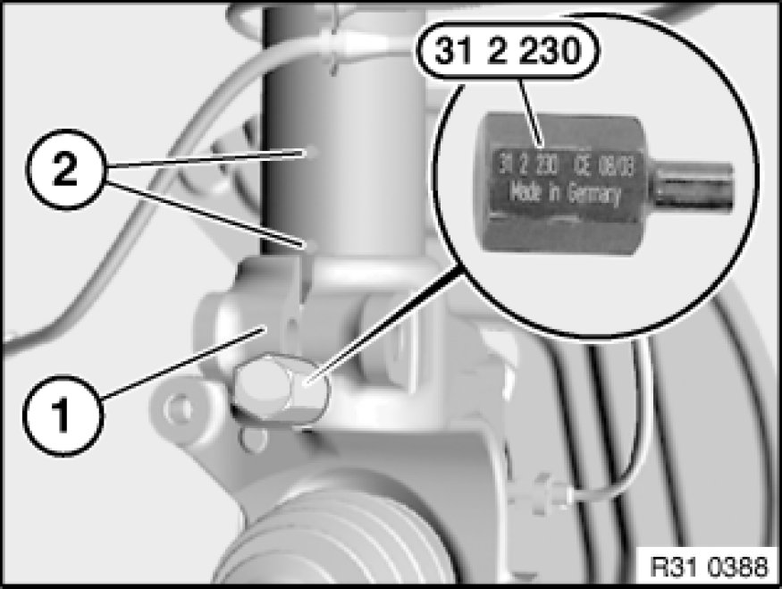
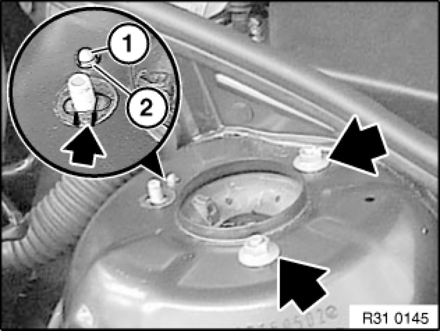

Removing and Installing Complete Left or Right Spring Strut Shock Absorber
31 31 000 - Removing and installing complete left or right spring strut shock absorber

Special tools required:
- 31 2 230 31 2 230 Socket

Important!
If the centering pin is missing from the support bearing, the position of the studs to the wheel arch must be marked so that the original camber is approximately maintained.
Only one nut may ever be released for marking.

Necessary preliminary tasks:
- Remove brake caliper Removing and Installing/Replacing Left or Right Front Brake Caliper and tie back
- Remove stabilizer link from spring strut Removing and Installing/Replacing Push Rod (Stabilizer Link) for Left/Right Stabilizer
- Remove tie rod end from swivel bearing Replacing Left or Right Tie Rod

Important!
Risk of damage!
When the swivel bearing is removed from the spring strut, the tripod (2) can be pulled out of the tulip (1) and fall into the rubber gaiter (3). In this event, it will be necessary to install a new output shaft because the tripod (2) can jam or a roller of the tripod (2) can slip off the moulding. The roller would then be located in the gaiter (3) or bellows and result in rapid failure.

Remove line for pulse generator from spring strut.
If necessary, remove line for brake pad wear sensor from spring strut.
Support swivel bearing (1) with workshop jack and a suitable mounting.
Release nut and remove bolt (2) towards front.
Expand swivel bearing (1) with special tool 31 2 230 31 2 230 Socket.
Lower workshop jack.
Remove swivel bearing (1) and tie up.
Installation Note:
Replace self-locking nut.
Tightening torque 31 31 3AZ Spring Struts (Front).

Installation Note:
Keep press fit of swivel gearing and spring strut in lower area clean and free from oil and grease.
Spread swivel bearing (1) with special tool 31 2 230 31 2 230 Socket, align by means of gap to positioning pins (2) on back of spring strut and raise as far as it will go.

Centering pin missing: Make position of studs in relation to wheel arch.
Secure spring strut against falling out.
Unscrew nuts.
Remove spring strut downwards out of wheel arch.
Installation Note:
Align spring strut using centering pin (1) to bore (2) in wheel arch or studs to wheel arch and push upwards.
Replace self-locking nuts.
Tightening torque, 31 31 1AZ Spring Struts (Front).
After installation:
- Carry out wheel alignment check if a spring strut with support bearing was or has been installed without centering pin.